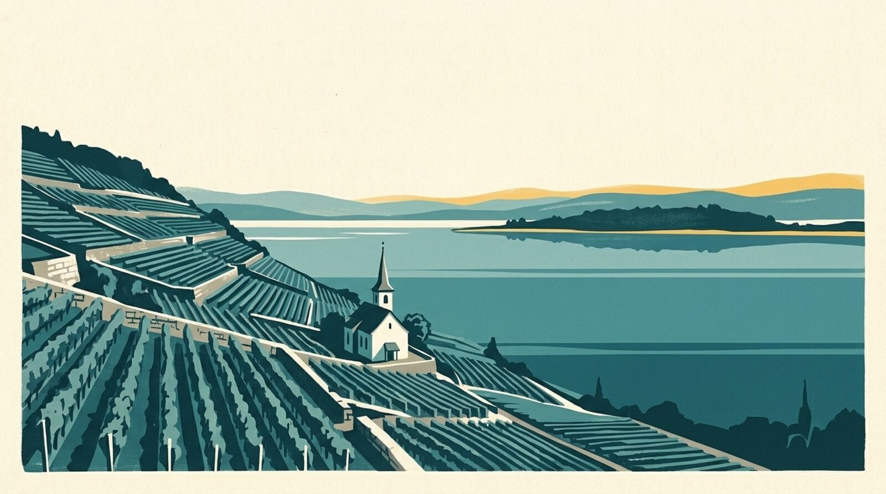

In breve
Il mio lago segue 7 spiagge del lago di Bienne, con la temperatura dell’acqua a 70 cm sotto la superficie dove è calcolata. Ecco l’elenco, poi gli indirizzi utili in riva all’acqua.

Il lago di Bienne copre circa 39,3 km², scende fino a 74 m e si trova a 429 m di altitudine.
Le 7 spiagge seguite del lago di Bienne
Tra parentesi: la temperatura del mattino del 13 novembre 2026, a 70 cm sotto la superficie (modello Alplakes).
- Cerlier (Erlach) (11,5 °C)
- La Neuveville (11,7 °C)
- Strandbad Rostele (11,8 °C)
- Tüscherz (11,8 °C)
- Badewiese Funtelen (11,7 °C)
- Bienne – Plage (11,2 °C)
- Nidau (11,4 °C)
Ingresso, stagione e accesso
Prezzi e date rilevati il 13 novembre 2026 dalle fonti qui sotto, per la stagione 2026: da verificare sul sito di ogni bagno prima di andare.
- Strandbad Biel (Uferweg 40, Nidau): stagione 2026 dal 9 maggio al 13 settembre; ingresso adulti 5 franchi, ridotto 4 franchi (studenti, apprendisti, AVS).
Un drink o un pasto in riva al lago di Bienne
- Strandbad-Restaurant Biel, Nidau (da maggio a settembre): Allo Strandbad di Bienne (Uferweg 40): ristorante sul posto e brunch della domenica in riva al lago, da maggio a metà settembre.
- Hafenrestaurant Joran, Bienne: Ristorante del porto di Bienne, Badhausstrasse 1a.
- Brasserie am See, Erlach: Ristorante contemporaneo con terrazza al campeggio di Erlach, sul lago di Bienne.
- See Bistro (Kreuz), Ligerz: Bistrot direttamente sul lago, aperto nei giorni di sole; chiuso con il maltempo.
Noleggio sul lago di Bienne
Ogni scheda rimanda al sito del gestore, quando esiste. Orari e prezzi cambiano: da confermare con lui.
- Saunaboot Biel, Bienne (Vingelz), vicino a Bienne – Plage: Barca-sauna sul lago di Bienne, gestita da Joran-Biel (Neuenburgstrasse 72, fermata del bus Räblus Vingelz).
- meetmyboat, Nidau, vicino a Nidau: Noleggio di barche e stand-up paddle dal porticciolo di Bienne, a Nidau; paddle da 25 franchi l’ora secondo il sito.
- Neptun AG, Bienne, vicino a Bienne – Plage: Noleggio di barche dal 1877; aperto con bel tempo, dalle 11 alle 19.
- Biel-Boot, Bienne, vicino a Bienne – Plage: Noleggio di barche a motore al porticciolo di Bienne.
- Faul Erlach AG, Erlach, vicino a Cerlier (Erlach): Barche a noleggio a Cerlier, o la popolare «BBQ-Donut», una grande ciambella galleggiante con barbecue.
Saune sul lago di Bienne
- Saunafloss Erlach, Erlach, vicino a Cerlier (Erlach): Zattere-sauna a legna ormeggiate all’imbarcadero di Erlach sul lago di Bienne: poi dritti nel lago. Su prenotazione.
Da leggere anche
- Temperatura dell’acqua del lago di Bienne: da dove vengono i dati
- Bagno invernale nei laghi di Neuchâtel, Bienne e Morat: spiagge e saune
- Saune galleggianti e barche-sauna in Svizzera: 6 indirizzi su quattro laghi
L’acqua del lago in questo momento
La temperatura dell’acqua di ogni spiaggia è nell’app Il mio lago, aggiornata ogni tre ore.